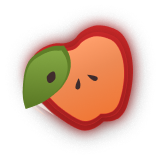
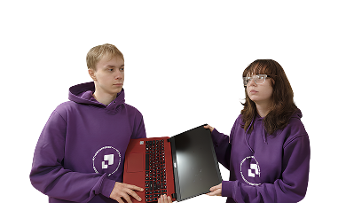

Эдем — просто
и эффективно
Мобильный, отечественный инструмент для мгновенного и точного контроля качества плодоовощной продукции на базе доверенной ОС Аврора.
Попробовать
Мы создали суверенный технологический стек. Это первый референсный ИИ-инструмент, интегрирующий C++/QML с NCNN, TFLite и MLPack для анализа на устройстве (Edge AI).
Три простых этапа

Скан/Фото яблока

Анализ через отечественный ИИ

Простой и понятный результат
Проблема
В чем ключевая проблема, которую вы решаете?
Ручной контроль качества — это дорого, субъективно и неточно, что ведет к прямым
финансовым потерям.
Каков масштаб проблемы?
По официальным данным Роспотребнадзора, нарушения выявляются примерно в 13% проб
плодоовощной продукции
Какова цена ошибки?
Ошибки инспекторов (пропуск брака) могут стоить крупным ритейлерам десятки
миллионов рублей, заражая целые хранилища.
Почему существующие решения не подходят?
Конкуренты — это либо дорогие стационарные конвейеры, либо небезопасные облачные
боты.
Бизнес-Ценность и Масштаб
"Эдем" — Фундамент для Индустрии 4.0
Агро-контроль
Контроль качества швов и деталей

Беспилотники
Анализ полей и прогнозирование урожая.
Промышленность
Контроль качества швов и деталей

Прямо перед Вами
Теребенин Арсений Романович
Designer
Ворникова Алина Николаевна
Developers
Завойкина Анастасия Иговревна
Зырянцев Дмитрий Викторович
Progect-manager
Исмаилова Манижа Асламджоновна
FAQ
Для кого предназначен ваш продукт?
Наш продукт предназначен для инспекторов, закупщиков и логистов в агропромышленном секторе и
крупном ритейле, которым требуется мгновенный и объективный контроль качества продукции.
Что такое "Edge AI" и почему это важно?
Edge AI означает, что вся обработка данных и анализ ИИ происходят непосредственно на
устройстве (смартфоне), а не в облаке. Это обеспечивает высокую скорость, полную безопасность
данных и независимость от интернет-соединения.
Насколько безопасно ваше решение?
Решение полностью суверенно. Оно разработано на отечественной ОС Аврора и не требует
отправки фотографий или данных на внешние сервера, гарантируя максимальный уровень
конфиденциальности.
Каково долгосрочное видение проекта?
Мы видим "Эдем" как фундамент для Индустрии 4.0 в России. Технология может быть масштабирована
для контроля качества в других отраслях: от промышленных швов до анализа снимков с беспилотников.
Какие виды продукции может анализировать?
Основной фокус — это плодоовощная продукция (яблоки, груши, цитрусовые). Однако система способна
к быстрому переобучению для работы с любыми однородными объектами, такими как зерно, орехи и т.д.
Требуется ли подключение к Интернету?
На данный момент — да, требуется. Поскольку в рамках хакатона мы разработали веб-демонстрацию,
она использует облачные ресурсы. Однако финальное приложение на ОС Аврора будет работать полностью офлайн благодаря технологии Edge AI.
Почему вы не представили финальное приложение на ОС Аврора, а только веб-демонстрацию?
? Мы приняли стратегическое решение сосредоточиться на доказательстве концепции (Proof of Concept). Создание нативного приложения на Авроре требует значительного времени на адаптацию C++/QML-стека и компиляцию, что невозможно в рамках хакатона. Мы выбрали веб-версию, чтобы быстро и качественно показать работоспособность ключевой ИИ-логики и обеспечить легкий доступ к демо.
Какова дальнейшая стратегия перехода от веба к Авроре?
Веб-версия служит полигоном для тестирования и обучения ИИ-моделей. Затем эти готовые и проверенные модели будут интегрированы в защищенное, нативное приложение для ОС Аврора, гарантируя высокую производительность и безопасность.